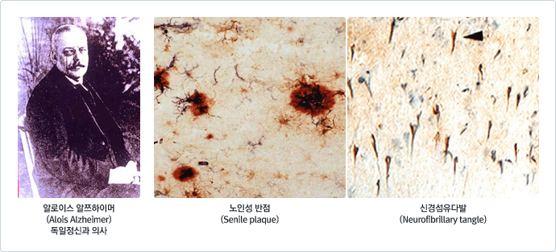
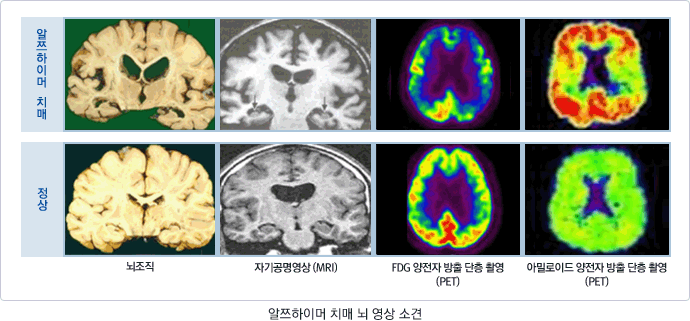
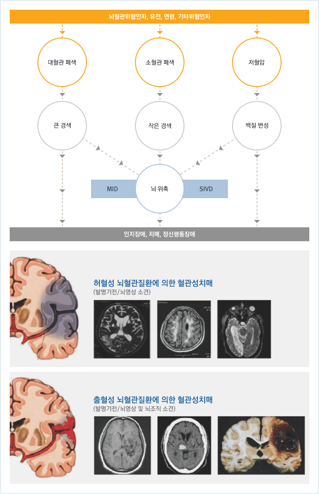

치매의 정의와 진단기준
치매는 정상적으로 생활해오던 사람이 후천적으로 다양한 원인으로 인해 기억, 언어, 판단력 등의 여러 영역의 인지기능이 떨어져서 일상생활에 상당한 지장이 나타나는 상태로, 치매는 어떤 하나의 질병 명이 아니라, 특정한 조건에서 여러 증상들이 함께 나타나는 증상들의 묶음입니다. 치매의 대표적인 초기 증상은 기억력 장애입니다. 나이가 들면서 젊었을 때에 비해 기억력은 저하 되지만, 치매는 이러한 정상적인 변화와는 다릅니다. 즉, 치매는 질병이며 나이가 들어서 생기는 자연스러운 결과가 아닙니다. 나이가 들면서 생기는 기억력 저하는 대개 사소한 일들에 국한되어 있으며, 개인의 일상생활을 심각하게 저해하지 않습니다. 간단하게 정상 노인과 치매 노인의 기억력 차이를 비교해보면 아래와 같습니다.
| 정상노인의 기억력 저하 | 치매노인의 기억장애 |
|---|---|
| 뇌의 자연적인 노화현상이 원인이다. | 뇌의 질병이나 손상이 원인이다. |
| 경험한 것의 일부를 잊어버린다. | 경험한 것의 전체를 잊어버린다. |
| 잊어버리는 것이 많아져도 진행되지 않는다. | 기억장애가 점차 심해지며 판단력도 저하된다. |
| 잊어버린 사실을 스스로 안다. | 잊어버린 사실 자체를 모른다. |
| 일상생활에 지장이 없다. | 일상생활에 지장을 받는다. |
과거에는 치매를 망령, 노망이라고 부르면서 노인이면 당연히 겪게 되는 노화 현상이라고 생각했으나, 최근의 많은 연구를 통해 분명한 뇌 질환으로 인식되고 있습니다. 두통이나 만성 기침, 피로감 등의 여러 증상들도 그 원인에 따라 치료법이 다르듯, 치매도 그 원인을 밝혀 적절한 치료법을 찾아내는 것이 원칙이므로, 치매에 대한 정확한 진단이 중요합니다.
치매의 진단기준
치매를 진단하기 위해 가장 널리 사용되는 미국 정신과 학회의 DSM-IV (diagnostic and statistical manual of mental disorder, 4th edition) 진단 기준은 다음과 같습니다.
- 여러 가지 인지 결핍이 발생하는데, 다음 중 A1을 포함한 두 가지로 나타난다.
- 기억장애(새로운 정보를 학습할 능력 장애, 과거 학습한 정보를 회상하는 능력의 장애)
- 다음의 인지장애 중 하나(또는 그 이상)가 존재
- 실어증(언어장애)
- 실행증(운동기능이 정상인데도 운동 활동 수행 능력의 손상)
- 실인증(감각기능이 정상인데도 대상을 인지하지 못함)
- 실행기능(예: 기획, 구성, 배열, 요약)
- 위의 장애가 사회적 및 직업적 기능의 심각한 장해를 초래하고 병전의 기능 수준보다 상당히 감퇴되어 있음
- 장애가 섬망의 경과 중에는 나타난 것이 아님
오해1
노인이 되면 누구나 치매에 걸린다.
모든 노인이 치매에 걸리지는 않습니다.(치매, 얼마나 많은가요? 부분을 참고하세요)
오해2
치매는 노인에게만 생긴다.
연령 증가에 따라 발생이 증가하지만 치매는 노인에게만 생기는 것이 아닙니다.(치매, 얼마나 많은가요? 부분을 참고하세요)
오해3
치매와 알쯔하이머병은 같은 말이다.
알쯔하이머병은 치매의 약 50% 내외를 차지하는 중요한 원인이지만 그 밖에도 다양한 원인이 치매를 일으킵니다.(치매, 어떤 병인가요? 부분을 참고하세요)
오해4
치매환자는 위험하다.
거의 모든 치매환자들이 한두가지 이상 행동을 보이고 일부 치매환자들은 쉽게 흥분하고 공격적인 언사를 하기도 합니다. 하지만 모든 치매환자가 위험한 것은 아닙니다.(치매, 어떤 병인가요? 부분을 참고하세요)
오해5
치매 환자는 아무것도 모른다.
아무리 진행된 치매 환자라도 모든 기억과 감정을 잃어버린 환자는 드뭅니다. 초기 치매환자는 기본적인 일상생활에는 무리가 없고 말기 치매환자라도 기본적인 감정은 유지됩니다.(치매, 어떤 병인가요? 부분을 참고하세요)
오해6
간단한 검사로 치매를 진단할 수 있다.
현재 치매 여부는 의사의 임상적 판단이 가장 중요합니다. 어떤 하나의 검사로 치매를 진단하지 않습니다. 예를 들어, 간이정신상태 검사만으로 치매를 진단할 수 없고, 유전자검사로 알쯔하이머병을 진단할 수 없습니다.(치매, 어떻게 진단하나요? 부분을 참고하세요)
오해7
치매는 불치병이다.
치매의 10-20%는 회복이 가능합니다. 나머지도 조기발견과 체계적인 관리로 증상 완화를 기대할 수 있습니다. 치매 환자의 이상행동도 조절할 수 있습니다.(치매, 치료가 되나요? 부분을 참고하세요)
오해8
치매환자는 시설로 가야한다.
모든 치매환자가 시설에 입소/입원할 필요는 없습니다. 치매환자는 사랑하는 가족의 손길로 돌보는 것이 바람직합니다. 입소 결정은 환자의 안전, 정신행동증상의 정도, 일상생활능력 저하정도, 영양과 가정의 심리적, 육체적 및 경제적 부담을 종합적으로 고려해야 합니다.(치매, 치료가 되나요? 부분을 참고하세요)
오해9
건망증은 치매의 초기 증상이다.
건망증이 모두 치매의 초기 증상은 아닙니다. 오히려 잊는다는 것은 자연스러운 현상이기도 합니다. 치매의 기억력 저하는 일반적인 건망증과 구별되어야 합니다.(치매, 예방도 가능하죠? 부분을 참고하세요)
오해10
치매 예방약과 주사가 있다.
아직 공인된 치매 예방약은 없습니다. 비타민 B, C, E 등이 치매를 예방하는지에 대해 분명히 밝혀진 것은 없습니다.(치매, 예방도 가능하죠? 부분을 참고하세요)
치매는 다양한 증상을 보일 수 있지만 인지증상과 정신행동증상으로 나눌 수 있습니다.
인지기능장애 증상
- 1) 기억력 장애
초기에 최근에 있었던 일을 기억하지 못하는 단기 기억력의 감퇴가 주로 나타나며 이로 인하여 새로운 정보를 습득하는 능력을 잃게 됩니다. 시간이 지남에 따라 장기 기억력의 감퇴도 동반하게 됩니다.
- 2) 지남력 장애
날짜와 계절에 대한 감각이 떨어지는 시간 지남력의 장애를 보이게 됩니다. 즉 환자는 오늘이 며칠인지, 무슨 요일인지 혹은 지금이 무슨 계절인지를 모르게 되고 이에 따라 자주 날짜를 착각하여 실수를 하게 됩니다.
- 3) 언어장애
- 환자는 언어 소통 능력의 장애를 보여 말을 하는데 단어가 떠오르지 않거나, 적절한 단어를 사용하지 못하고 다른 단어를 사용합니다.
- 말수가 현저하게 줄어들고 의사소통이 제대로 되지 않습니다.
- 4) 시공간 능력의 장애
시공간 능력이 떨어지는 환자는 자주 다니던 익숙한 거리에서 길을 잃거나 심하게는 집안에서 방이나 화장실 등을 찾아가지 못하는 증상으로까지 발전할 수 있습니다. 자동차를 운전하는 경우에 목적지를 제대로 찾아갈 수 없게 되기도 합니다.
- 5) 실행능력 장애
- 감각 및 운동기관이 온전한데도 불구하고 목적성 있는 행동을 못하는 경우를 말합니다.
- 초기에 환자는 운동화 끈을 매지 못한다던가 하는 증상에서부터 시작하여 몇 가지 순서를 밟아야 되는 일, 가령 식탁 차리기에 어려움을 느끼게 됩니다. 또한 도구의 사용법을 잊어버려서 집안의 간단한 도구, 예를 들면 가스레인지 혹은 텔레비전 등을 적절하게 사용하지 못하게 됩니다. 치매가 진행됨에 따라 식사를 하거나 옷을 입는 단순한 일에서조차 장애가 나타납니다.
- 6) 판단력의 장애
환자는 적거나 또는 큰 규모에서 돈 관리를 제대로 못하게 되며 때로 필요 없는 물건을 사기도 합니다.
정신행동증상
- 환자는 자신의 인지기능 저하에 대한 반응으로 혹은 이와 상관없이 우울증을 보입니다.
- 이유 없이 자꾸 서성거리며 한자리에 오래 앉아있지 못하는 일이 많으며 자신의 소지품을 제대로 챙기지 못하고 자꾸 다른 사람이 자신의 것을 훔쳐 간다든지 하는 의심이 늘어나게 됩니다.
- 환자는 수면에 장애가 생겨 낮에는 자고 밤에는 돌아다니며 가족들의 수면을 방해하는 일이 자주 있습니다.
- 때로는 지각의 장애가 생겨 다른 사람의 눈에는 보이지 않는 것을 본다든지 다른 사람의 귀에 들리지 않는 것을 본다든지 하는 환각 현상을 보이기도 합니다.
치매의 증상
인지기능 변화에 의한 증상
- 기억력 저하 - 최근의 말이나 사건에 대해서 기억을 하지 못한다.
- 언어기능 저하 - 사물이나 사람의 이름이 기억이 나지 않는다.
- 시간 지남력 저하 - 날짜와 시간에 대한 감각이 없다.
- 시공간능력 저하 - 자주 다니던 길을 잃고 헤맨다.
- 수행능력 저하 - 집안의 간단한 도구를 다루지 못한다.
행동 증상
- 성격변화 - 예전의 성격이 강해지거나 충동의 조절이 안 된다.
- 우울 - 슬프거나 기분이 쳐진 것처럼 행동한다.
- 초조 - 가만히 있지를 못하고 목적 없이 자꾸 움직인다.
- 환각 - 실제로는 없는 소리나 사물, 사람을 보거나 듣는다.
- 망상 - 자신의 돈이나 사물을 다른 사람이 훔쳐 갔다고 주장한다.
- 무감동/무관심 - 주변에 대한 관심과 흥미를 잃고 새로운 일을 시작하려는 의욕이 감소한다.
* 본문에 관한 자세한 내용을 보시려면 자료 다운을 클릭해 주세요.
제목 : 치매의 일반적 증상/ 저자 : 대림성모병원 정신과 박신영과장

치매의 임상경과는 치매의 원인에 따라 매우 다양한 양상을 보이므로 일률적으로 기술하기는 무척 어려우나 치매노인의 대부분을 차지하는 알쯔하이머병과 혈관성 치매에 대하여 그 특징적인 점들만 언급하면, 전자에서는 인지기능의 장애가 서서히 일어나서 점점 심해지며, 후자에서는 갑작스런 발병을 보이거나 계단식의 악화를 보이는 경우가 흔합니다.
알쯔하이머형 치매를 앓고 계신 환자의 발병부터 사망하기까지의 유병기간은 평균 약 10년이라고 알려져 있습니다. 초기 단계에는 건망증과 구별이 어려울 정도의 경미한 기억장애만을 보이지만, 점차 진행하면서 의미 있는 대화가 불가능해지며 여러 가지 신체적인 증상이 나타나는 말기 단계에 이르기까지 매우 다양하면서도 심각한 증상들이 나타납니다. 흔히 알쯔하이머형 치매의 경과를 아래와 표와 같이 초기, 중기, 말기 3단계 나눕니다. 그러나 모든 알쯔하이머형 치매 환자들이 아래와 같은 전형적인 경과를 순차적으로 보이는 것은 아니며, 사람에 따라, 치매의 원인 질환에 따라 두드러지는 증상이나 증상의 출현 순서가 바뀌어 나타나는 경우도 있습니다. 치매노인이 사망하는 직접적 원인 중에 가장 흔한 이유는 폐렴, 요로 감염증, 욕창성 궤양 등의 감염으로 인한 패혈증 입니다.
치매 단계별 증상과 특징
초기단계 (최경도, 경도: 발병 후 1-3년)
- 특징
초기 치매의 특징은 ‘최근 기억의 감퇴’가 시작되는 것입니다. 사회생활이나 직업능력이 다소 상실되더라도 어느 정도 독립적인 생활을 영위할 수 있고, 개인위생을 유지하며, 비교적 사회적인 판단력은 통상적으로 유지됩니다. 하지만 점차 진행되면서 직업적 기능의 유지, 운전하기, 물건사기, 음식장만하기 등 일상생활을 하는 데 어려움을 보이기 시작하여 주변 사람들의 다소간의 도움을 필요로 하게 됩니다.
- 증상
- 오래 전에 경험했던 일은 잘 기억하나, 조금 전에 했던 일 또는 생각을 자주 잊어버린다.
- 음식을 조리하다가 불 끄는 것을 잊어버리는 경우가 빈번해진다.
- 돈이나 열쇠 등 중요한 물건을 보관한 장소를 잊어버린다.
- 물건을 사러 갔다가 어떤 물건을 사야 할 지 잊어버려 되돌아오는 경우가 발생한다.
- 미리 적어 두지 않으면 중요한 약속을 잊어버린다.
- 평소 잘 알던 사람의 이름이 생각나지 않는다.
- 조금 전에 했던 말을 반복하거나 물었던 것을 되묻는다.
- 일반적인 대화에서 정확한 낱말을 구사하지 못하고 ‘그것’, ‘‘저것’ 이라고 표현하거나 우물쭈물 한다.
- 관심과 의욕이 없고 매사에 귀찮아한다.
- ‘누가 돈을 훔쳐갔다’ ‘부인이나 남편이 바람을 피운다’ 는 등의 남을 의심하는 말을 한다.
- 과거에 비해 성격이 변한 것 같다.
중기단계 (중증도 치매: 발병 후 2-10년)
- 특징
초기단계에서 보였던 기억력 감퇴, 언어능력 등의 증상은 더욱 악화되며, 대체적으로 사회적 판단에 장애를 겪게 됩니다. 점차 진행되면서, 씻기, 옷 입기 등 일상생활에 필요한 동작에도 어려움을 보여 일상생활을 유지하기위해 주변사람들이 도와주어야 합니다
- 증상
- 돈 계산이 서툴러진다.
- 전화, TV 등 가전제품을 조작하지 못한다.
- 음식 장만이나 집안 청소를 포함한 가사일 혹은 화장실이나 수도꼭지 사용 등을 서투르게 하거나 하지않으려고 한다.
- 외출 시 다른 사람의 도움이 필요하다.
- 오늘이 며칠인지, 지금이 몇 시인지, 어느 계절인지, 자신이 어디에 있는지 등을 파악하지 못한다.
- 평소 잘 알고 지내던 사람을 혼동하기 시작하지만 대개 가족은 알아본다.
- 적당한 낱말을 구사하는 능력이 더욱 떨어져 어색한 낱말을 둘러대거나 정확하게 말하지 못한다.
- 다른 사람들이 말하는 것을 이해하지 못하여 엉뚱한 대답을 하거나 그저 ‘예’라는 말로 대신 하기도 하고 대답을 못하고 머뭇거리거나 화를 내기도 한다.
- 신문이나 잡지를 읽기는 하지만 내용을 전혀 파악하지 못하거나 읽지 못한다.
- 익숙한 장소임에도 불구하고 길을 잃어버리는 경우가 발생한다.
- 집안을 계속 배회하거나 반복적인 행동을 거듭한다.
말기단계 (고도치매: 발병 후 8-12년)
- 특징
모든 지적능력이 심하게 손상되고, 일상생활의 능력이 심하게 감퇴되어 대소변을 가리지 못하며 스스로 식사를 할 수 없게 됩니다. 또한 팔 다리 등 신체에 장애가 없는데도 걷지 못하게 되어 뇌가 더 이상 신체에게 무엇을 지시할 수 없는 것처럼 보이게 됩니다. 이 시기에 환자는 기본적인 일상생활을 유지하기 위해 거의 전적으로 주변의 도움에 의존하게 됩니다.
- 증상
- 식사, 옷 입기, 세수하기, 대소변 가리기 등에 대해 완전히 다른 사람의 도움을 필요로 한다.
- 대부분의 기억이 상실된다.
- 집안 식구들도 알아보지 못한다.
- 자신의 이름, 고향, 나이도 기억하지 못한다.
- 혼자서 웅얼거릴 뿐 무슨 말을 하는지 그 내용을 전혀 파악할 수 없다.
- 한가지 단어만 계속 반복한다.
- 발음이 불분명해진다.
- 종국에는 말을 하지 않는다.
- 얼굴 표정이 사라지고 보행장애가 심해지며 근육이 더욱 굳어지는 등 파킨슨 양상이 더욱 심해진다.
- 간질증상이 동반될 수도 있다.
- 결국은 모든 기능을 잃게 되면서 누워서 지내게 된다.
* 본문에 관한 자세한 내용을 보시려면 자료 다운을 클릭해 주세요.
제목 : 치매의 일반적 경과/ 저자 대림성모병원 정신과 박신영과장
알쯔하이머 병는 진행적인 뇌세포의 퇴화로 치매증상을 야기하는, 가장 흔한 치매의 원인으로 전체 치매의 55-70%를 차지합니다. 알쯔하이머 병의 명칭은 이 병을 1907년 최초로 발견한 독일의사 알로이스 알쯔하이머(Alois Alzheimer)의 이름에서 유래하였습니다. 알쯔하이머 병은 매우 서서히 발병하여 점진적으로 악화가 진해되는 경과가 특징이고, 초기에는 주로 최근일에 대한 기억력에 대해서 문제를 보이다가 진행하면서, 진행되면서 다른 여러 인지기능의 이상을 동반하게 되며 종구에는 모든 일상생활 기능을 상실 하게됩니다. 알쯔하이머병의 자연경과는 상당히 다양하지만, 대략 증상 발현부터 진단까지 2~3년, 진단으로부터 요양시설(nursing home)에 머무르게 되는 기간까지 3~6년, 요양시설에서 사망까지 약 3년 정도로 총 유병기간은 9~12년입니다.
알쯔하이머병은 뇌조직 검사에서 베타아밀로이드 단백질이 침착되면서 생긴 노인반(senile plaque) 및 타우 단백질이 과인산화되면서 형성된 신경섬유다발(neurofibrillary tangle)등 특징적인 병변이 관찰되면, 신경세포 소실로 인해 뇌위축 소견이 보입니다. 노인반(senile plaque)는 주로 기억과 학습에 관여하는 뇌의 측두엽과 두정엽에 쌓이는데, 이곳 피질은 기억, 언어 등의 인지 기능에 필수적이므로 이들 물질이 쌓이면 치매증상을 보이게 됩니다.
알쯔하이머병은 여성이 평균 2배 정도 더 잘 걸립니다. 이외에 알쯔하이머병에 잘 거리는 위험요소는 나이가 많을수록, 학력이 낮을수록, 직계 가족 중에 치매 환자가 있는 경우, 심한 머리 손상(교통사고, 낙상)이나 약하지만 반복적으로 머리 손상(권투선수)을 입은 경우, 다운증후군 환자, ApoE 유전자형에서 4형의 대립유전자를 가지고 있는 경우 등입니다. 그러나 위에 언급한 내용들이 절대적인 것은 아닙니다. 유전적 원인과 환경적 요인 등이 복합적으로 작용하여 사람마다 병의 발생 빈도가 달라집니다.


* 본문에 관한 자세한 내용을 보시려면 자료 다운을 클릭해 주세요.
제목 : 알쯔하이머병의 원인 / 저자 경기도노인전문용인병원 윤종철부장
혈관성 치매는 뇌혈관질환에 의해 뇌조직이 손상을 받아 치매가 발생하는 경우를 말합니다. 혈관성 치매를 일으키는 뇌혈관 질환에는 뇌혈관이 좁아지거나 막혀 나타나는 허혈성 뇌혈관질환과 뇌혈관의 파열로 인해 출혈이 발생하는 출혈성
뇌혈관질환이 있습니다.
알쯔하이머병 치매와는 달리, 혈관성 치매는 그 증상이 급격하게 시작되고 특징적으로 뇌혈관 질환의 증상이 선행, 동반하여 나타납니다. 혈관성 치매는 증상의 악화도 뇌혈관 질환의 추가 발생에 의한 변화시점이 비교적 뚜렷하여 계단식 악화의 양상을 보인다는 점이 특징적입니다. 흔히 ‘중풍을 앓고 난 후에 갑자기 인지기능이 떨어졌다’고 하는 경우 혈관성 치매의 가능성이 높습니다. 그러나 모든 혈관성 치매가 이러한 경과를 보이는 것은 아닙니다. 뇌의 소혈관이 점진적으로 막히는 경우에는 알쯔하이머병처럼 점진적인 경과를 보입니다. 따라서 치매의 원인을 감별하기 위해서 반드시 정밀검사가 필요합니다.
혈관성 치매는 다른 퇴행성 질환과 다리 초기부터 편마비, 구음장애, 안면마비, 연하곤란, 편측 시력장애, 시야장애, 보행장애, 실금 등 신경학적 증상을 동반하는 경우가 많습니다. 그러나 뇌혈관 질환이 있다고 해서 반드시 혈관성 치매가 나타나는 것은 아니고, 뇌졸중 이후에 약 1/4에서 혈관성 치매가 생긴다고 합니다. 뇌혈관질환에 의한 손상 받는 뇌의 부위나 크기, 손상 횟수에 따라 치매의 발병 여부와 증상의 심각도 결정됩니다.
뇌혈관 질환의 위험인자를 교정하거나 조절함으로써 일차적으로 뇌혈관 질환을 줄일 수 있고, 따라서 혈관성 치매의 발생도 사전 예방이 어느 정도 가능하고, 혈관성 치매 발병 이후에도 뇌혈관의 질환을 적극적으로 치료하고 관리함으로 혈관성 치매의 진행을 막을 수 있습니다.

루이체 치매란?
- 루이체 치매는 호산성 세포질내 봉입체(루이체)가 대뇌에 광범위하게 발생하는 것을 특징으로 하는 치매입니다.
- 퇴행성 치매의 원인 중 알쯔하이머병 다음으로 흔한 치매의 원인 질환으로 전체 치매 환자의 10~25%를 차지하는 것으로 알려져 있습니다.
루이체 치매의 증상
루이체 치매의 핵심증상
- 집중력과 각성상태를 포함하는 인지기능의 심한 변동
하루에도 아주 극도로 다양하게 변하는 인지저하(기억력의 감퇴나, 시간이나 공간에 대한 지남력을 잃어버리는)가 나타나는 것이 매우 특이한 소견입니다. 알쯔하이머병에서는 이런 증상들은 아주 말기에 나타나는 증상들입니다.
- 환시
질병의 초기부터 환시(사실은 아무것도 없는데 눈에 보이는 것)나 환청 등의 정신병적 증상이 나타날 수 있습니다.
- 파킨슨 증상
파킨슨 증상은 경직과, 느린 행동, 몸의 떨림 등 입니다. 파킨슨병과 루이체 치매의 다른 점은 파킨슨병보다도 치매증상이 심하고 운동 증상은 대부분 경직에만 국한되어 느린 행동이나 몸의 떨림은 덜 나타납니다.
루이체 치매 가능성을 시사하는 증상
- 렘수면 행동장애
수면에는 꿈을 꾸는 렘수면과 꿈을 꾸지 않는 비렘수면의 두가지가 있습니다. 정상적으로는 렘수면중에는 호흡근을 제외한 모든 근육의 힘이 빠지게 됩니다. 하니만 렘수면 행동장애에서는 렘수면 중 근육의 힘이 남아있게 되어 수면동안에 마치 깨어있는 것과 같이 여러 가지 행동을 하게 됩니다.
- 항정신병 약물에 대한 감수성
알쯔하이머병의 행동조절에 많이 사용하는 항정신병 약물을 사용하였을 경우에 파킨슨 증상과 같은 약물의 부작용이 훨씬 더 많이 나타납니다.
- 단일광자 단층촬영(SPECT) 또는 양전자 단층촬영(PET)에서 기저핵의 도파민 운반체 섭취율의 감소
루이체 치매에서 나타날 수 있는 부수적인 증상
- 반복적으로 넘어지거나 실신
- 설명할 수 없는 일시적인 의식상실
- 체계적인 망상
- 환청 등의 환각증상: 루이체 치매에서는 대체로 특징적인 환시가 나타나지만 환청 등 다른 형태의 환각 증상이 나타날 수도 있습니다.
루이체 치매의 진단
정상적인 사회 또는 직업 기능의 장애를 초래할 정도의 점진적인 인지저하가 있고, 초기에는 현저하거나 지속적인 기억장애가 반드시 나타나는 것은 아니지만 계속 진행되고 있음은 분명한 경우, 특히 신경인지기능 검사상 집중력, 전두엽-피질하 기능, 시공간 능력의 검사상 결함이 현저한 경우에 루이체 치매를 의심해 볼 수 있습니다.
루이체 치매의 치료
- 최근 알쯔하이머병 약물로 개발된 콜린에스테라아제 억제제인 도네페질과 같은 약물을 사용하는 경우 행동 증상, 인지기능, 정신증적 증상의 호전을 볼 수도 있다고 합니다.
- 항정신병약물에 감수성을 보이는 환자들이 많고 이런 경우 치명적일 수도 있으므로 환시나 환청, 망상이 있는 경우에도 아주 소량의 항정신병약물을 조심스럽게 사용해야 합니다.
- 파킨슨 증상 치료제를 사용할 수 있으나 효과는 특발성 파킨슨 증후군에 비해 현저하게 떨어지는 것으로 알려져 있습니다.
가역성 치매란
- 가역성 치매란 완치가 가능한 원인에 의해 발생한 치매를 말하며 일반적으로 전체 치매의 5-10%를 차지하는 것으로 알려져 있습니다.
- 치료가 가능한 질환에 의한 치매라 할지라도 적절한 시기에 치료를 하지 않으면 뇌에 구조적 변성이 발생하거나 비가역적인 변화 생겨서 원인 질환을 치료하여도 치매 증상이 좋아지지 않을 수 있습니다. 그러므로 치매 증상을 보일 때는 빨리 전문 병원을 찾아 정확한 진단을 받는 것이 중요합니다.
대표적인 가역성 치매의 종류
- 우울증에 의한 가성치매
- 정상압 뇌수두증
- 뇌종양 및 만성 경막하 혈종
- 감염성 질환
- 내분비질환
- 결핍성 질환
- 알코올 중독
- 약물과 연관된 치매
* 본문에 관한 자세한 내용을 보시려면 자료 다운을 클릭해 주세요.
제목 : 가역성 치매 / 저자 경상대학교병원 정신과 김봉조교수
유전병이란
좁은 의미로는 양친에게 물려받은 유전자가 질병을 일으키는 것을 말하지만 넓은 의미로는 유전적인 요인이 영향을 미치는 질병을 의미할 수도 있습니다.
좁은 의미의 유전병
좁은 의미의 유전병에 속하는 치매는 매우 드뭅니다.
- 전체 알쯔하이머병 중 약 5% 정도만이 상염색체 우성 양식으로 유전되는 가족성 알쯔하이머병 입니다. 상염색체 우성 유전이란 알쯔하이머병을 일으키는 원인 유전자를 물려받은 사람은 거의 100% 알쯔하이머병이 걸리게 되는 경우를 말합니다.
- 가족성 알쯔하이머병을 유발하는 원인 유전자로는 아밀로이드전구단백 유전자(amyloid precursor protein), 프레세닐린 1(presenilin-1) 유전자, 프레세닐린 2(presenilin- 2) 유전자의 돌연변이 등이 있으며, 원인 유전자가 아직 밝혀지지 않은 경우도 30% 정도 됩니다.
- 가족성 알쯔하이머병은 대개 40～50대에 일찍 발병하는 경향이 있습니다. 가족성 알쯔하이머병이 비가족성 알쯔하이머병에 비해 진행도 빠르고, 발병 초기부터 우울, 조울 등의 정신증상이나 간질, 간대성경련, 보행장애 등의 신경학적 증상이 동반되는 경우가 많습니다.
특정 유전자의 영향
특정 유전자가 치매 발병에 영향을 미친다고 알려져 있는 경우도 있습니다.
- 아포지단백 유전자 중 4형 대립유전자를 1개 가진 사람은 그렇지 않은 사람에 비해 3배 정도 알쯔하이머병의 발병 위험이 높으며, 2개 가진 사람은 20배 이상 높습니다.
유전적인 영향
많은 질환들이 유전적인 영향을 받는 것으로 알려져 있습니다. 치매도 그럴 수 있습니다.
- 암, 치매, 심한 정신병 등과 같은 상당수의 중증 질환들에게 유전자가 상당히 중요한 역할을 담당하는 것으로 알려지고 있으며 100세 이상으로 장수하는 경우도 유전자가 중요한 역할을 담당하는 것으로 생각되고 있습니다.
- 고혈압이나 당뇨도 유전적인 경향성이 있기 때문에 가족 중 뇌졸중이나 혈관성치매 환자 분이 있는 경우에는 보다 많은 주의가 필요합니다.